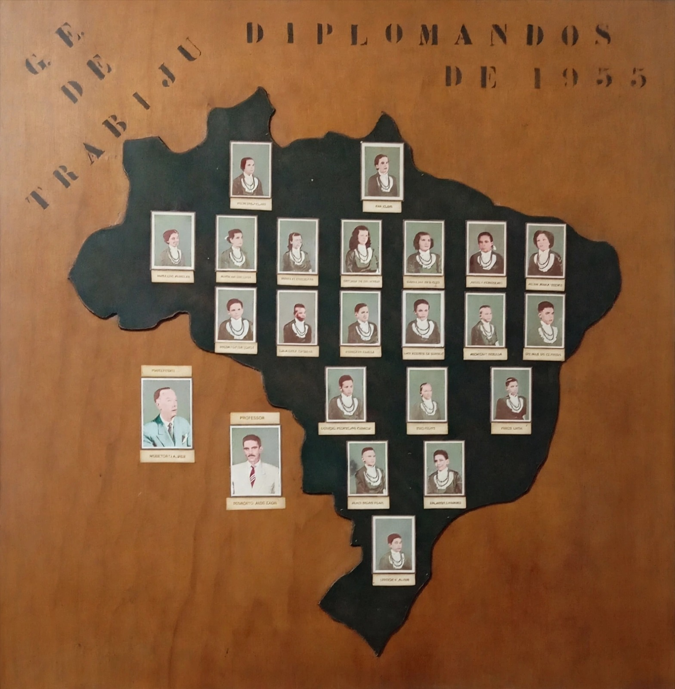
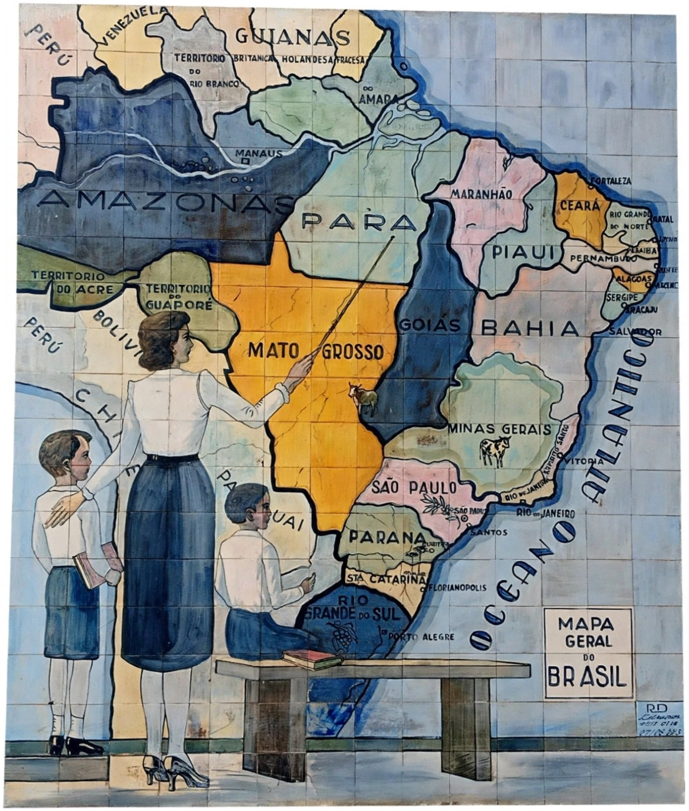

Diplomandos de 1955
do Grupo Escolar de Trabiju

“Mapa Geral do Brasil”
pintura de 1942
AGORA É
PATRIMÔNIO
Histórico, cultural e
imaterial de Trabiju
Leis reconhecem quadros localizados na
E.E. “Alfredo Evangelista Nogueira”
Os dois quadros foram considerados
patrimônio histórico do município.